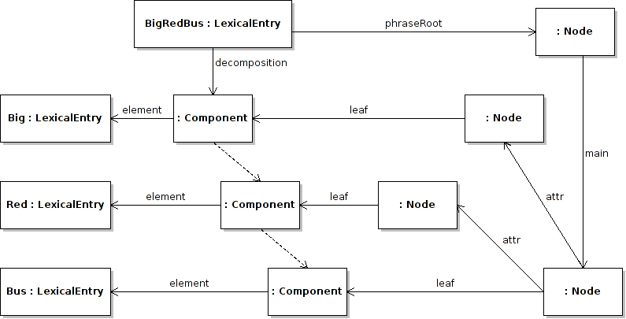

Next: Noun phrase chunks Up: Phrase Structure Module Previous: Phrase structures Contents
Dependency grammars focus on the links between different words and so lemon is a very suitable representation. In fact all a dependency grammar needs to do is create sub-properties of lemon:edge in its grammar description ontology. For example we could create a dependency parse of “big red bus” as follows:
:big_red_bus
lemon:decomposition ( :big_component
:red_component
:bus_component ) ;
lemon:phraseRoot [
:main [ lemon:leaf :bus_component ;
:attr [ lemon:leaf :red_component ]
:attr [ lemon:leaf :big_component ]
] ] .
:main rdfs:subPropertyOf lemon:edge .
:attr rdfs:subPropertyOf lemon:edge .

It is of course possible to include both the dependency and the phrase structure parse simultaneously.
These parses can also be useful for identifying elements in frames. For example phrasal verbs in English, such as “switch off” can have multiple frames, namely “X switches Y off” and “X switches off Y”. To perform this we need to be able to state a decomposition of the phrase, which could be done as follows.
:switch_off lemon:decomposition ( :switch_component
:off_component ) .
lemon:phraseRoot [ lemon:leaf :switch_component ;
:particle [ lemon:leaf :off_component ] ] .
:particle rdfs:subPropertyOf lemon:edge .
We will present an alternative approach to this in the next section that uses the full parse tree (example 43).
John McCrae 2012-07-31